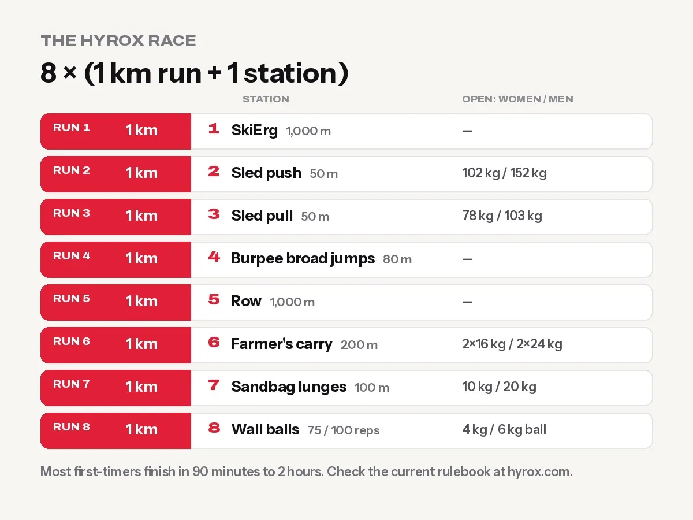

HYROX Training for Beginners: Stations, Weights and a 12-Week Plan
What is HYROX? The 8 stations, Open weights for men and women, finish times, and a 12-week beginner plan you can train for in any normal gym.

HYROX is a fitness race: 8 rounds of a 1 km run followed by one workout station, for 8 km of running and 8 stations in total. The stations, always in this order, are SkiErg, sled push, sled pull, burpee broad jumps, rowing, farmer’s carry, sandbag lunges and wall balls. Most first-timers finish in about 90 minutes to 2 hours. To prepare, train 3–5 days a week for about 12 weeks: running, strength, and “compromised running” (running straight after a hard exercise).
HYROX is one of the fastest-growing fitness races in the world. It started in Hamburg in 2017, and now runs on six continents. It has become huge in Asia too: HYROX India has a full season of races in Delhi, Mumbai and Bengaluru, and the Mumbai race sold out. Its appeal is simple: it’s the same race everywhere, so a beginner in Kathmandu and an athlete in London are tested on exactly the same course.
The HYROX race format

| # | Run | Station | Open women | Open men |
|---|---|---|---|---|
| 1 | 1 km | SkiErg 1,000 m | — | — |
| 2 | 1 km | Sled push 50 m | 102 kg (incl. sled) | 152 kg (incl. sled) |
| 3 | 1 km | Sled pull 50 m | 78 kg | 103 kg |
| 4 | 1 km | Burpee broad jumps 80 m | — | — |
| 5 | 1 km | Row 1,000 m | — | — |
| 6 | 1 km | Farmer’s carry 200 m | 2 × 16 kg | 2 × 24 kg |
| 7 | 1 km | Sandbag lunges 100 m | 10 kg | 20 kg |
| 8 | 1 km | Wall balls | 75 reps, 4 kg ball | 100 reps, 6 kg ball |
Weights as listed in published HYROX format guides for the Open division. Always check the current rulebook on hyrox.com before you race.
Divisions
- Open: the standard weights above. This is where beginners start.
- Pro: heavier sleds, sandbag and wall ball; same distances.
- Doubles: two people run the full 8 km together and split the station work. The most popular way to try your first race.
- Relay: a team of four; each person does 2 runs and 2 stations.
What’s a good HYROX time?
- First-timers: usually 90 minutes to 2 hours.
- Fit recreational athletes: around 75–90 minutes. One study of recreational athletes reported a median of about 86 minutes.
- Elite: under 60 minutes.
For your first race, the only goal is to finish strong.
What fitness HYROX actually tests
About half your race time is running, and the rest is strength-endurance under fatigue. You need:
- An aerobic base, to run 8 × 1 km without blowing up. Build it with Zone 2 training.
- Leg and grip strength for sleds, lunges and carries. Squats, deadlifts and lunges matter more than bench press.
- Compromised running: running when your legs are already burning from a station. This is the skill that surprises beginners most.
- Pacing. Most beginners start too fast and suffer from station 5 onwards.
Can I train for HYROX in a normal gym?
Yes. You don’t need a special HYROX gym. Many gyms don’t have a SkiErg or a sled, so use substitutes:
| Station | Best equipment | Substitute in a normal gym |
|---|---|---|
| SkiErg | SkiErg | Rowing machine, or cable straight-arm pulldowns + band pull-downs |
| Sled push | Sled on turf | Heavy leg press (high reps), walking lunges, or pushing a loaded plate across a rubber floor |
| Sled pull | Sled + rope | Heavy seated cable rows, rope pulls on a cable machine, backward walks with a resistance band |
| Burpee broad jumps | Floor space | Burpees + standing broad jumps, separately or combined |
| Rowing | Rowing machine | Rower, or bike/elliptical intervals |
| Farmer’s carry | Kettlebells | Heavy dumbbells, walk laps of the gym floor |
| Sandbag lunges | Sandbag | Dumbbell or barbell walking lunges, or a bag filled with sand or rice on your shoulders |
| Wall balls | Wall ball + target | Dumbbell thrusters, goblet squat + press, or a heavy football against a wall |
A 12-week HYROX plan for beginners
This plan assumes you can already run or jog 3–5 km and have been training in the gym for a few months. If you can’t run 3 km yet, build up to it first with easy run-walk sessions 3 times a week.
Each week, do these 4 sessions (plus easy walking on other days):
| Session | What to do |
|---|---|
| 1. Strength | Back or goblet squat 4×6–8 · Romanian deadlift 3×8 · Walking lunges 3×10 each leg · Seated row 3×10 · Farmer’s carry 4×40 m |
| 2. Zone 2 run | 30 → 60 min at a conversational pace (build 5 min a week) |
| 3. Intervals | Weeks 1–4: 6×400 m hard, 90 s rest · Weeks 5–8: 5×800 m · Weeks 9–12: 4×1 km at goal race pace |
| 4. HYROX simulation | Run 1 km, then one station; repeat (see below) |
The simulation session builds up like this
| Weeks | Simulation |
|---|---|
| 1–3 | 4 rounds: 500 m run + half-volume station (e.g. 25 wall balls, 500 m row) |
| 4–6 | 4 rounds: 1 km run + half-volume station |
| 7–9 | 6 rounds: 1 km run + 75% volume station |
| 10 | Full simulation: 8 × (1 km + full station, using substitutes) |
| 11 | 5 rounds at race pace, then reduce volume |
| 12 | Race week: two short, easy sessions, plenty of sleep and food |
Progress gradually. Add running distance by about 10% a week at most. If knees, shins or Achilles tendons start to hurt, back off for a few days.
HYROX station tips
- SkiErg: drive with your hips and lats, not only your arms. Don’t sprint it; it’s the first station.
- Sled push: arms straight or slightly bent, low body angle, short powerful steps.
- Sled pull: sit back and use your legs. Walk the rope back, hand over hand, and keep the rope tidy.
- Burpee broad jumps: find a rhythm you can hold for the whole 80 m. Step back instead of jumping back if needed.
- Row: long strokes, 24–28 strokes a minute. Legs, then body, then arms.
- Farmer’s carry: chalk or dry hands, walk fast, shoulders down. Avoid putting the bells down.
- Sandbag lunges: your back knee must touch the floor. Steady pace, short breaks if needed.
- Wall balls: break into sets early (e.g. 10s or 15s) instead of going to failure. Full squat depth, ball to the target every rep.
Fuel, recovery and gear
- Eat enough. Training 4–5 days a week with running needs energy. Have a carb-rich meal 2–3 hours before key sessions.
- Protein of about 1.6 g per kg of body weight a day helps you recover. Here’s how much protein you need.
- Creatine (3–5 g a day) may help the strength stations; it’s optional.
- Sleep 7–9 hours.
- Shoes: a stable running shoe with good grip for the turf and the run.
- Gloves: optional for sled ropes; many athletes use chalk instead.
Common HYROX mistakes
- Going out too fast on run 1. Run the first kilometre slower than feels right.
- Training only strength or only running. HYROX needs both, plus running after stations.
- Never practising wall balls when tired. They come last. Practise them after a run.
- Ignoring grip. Weak grip ruins the carry and sled pull. Add carries and dead hangs every week.
- Doing a full race simulation every week. That’s too tiring. Once or twice in the whole plan is enough.
Frequently asked questions
What is HYROX?
A fitness race of 8 × 1 km runs, each followed by one of eight workout stations: SkiErg, sled push, sled pull, burpee broad jumps, row, farmer’s carry, sandbag lunges and wall balls.
Is HYROX good for beginners?
Yes. The Open and Doubles divisions are designed for everyday gym-goers. With about 12 weeks of training, most fit beginners can finish.
How long does a HYROX race take?
Most first-timers finish in about 90 minutes to 2 hours. Elite athletes finish in under an hour.
What are the HYROX weights for women and men?
In the Open division, women push a 102 kg sled, pull 78 kg, carry two 16 kg kettlebells, lunge with a 10 kg sandbag and do 75 wall balls with a 4 kg ball. Men push 152 kg, pull 103 kg, carry two 24 kg bells, lunge with 20 kg and do 100 wall balls with a 6 kg ball. Check the current rulebook before racing.
Can I train for HYROX without a sled or SkiErg?
Yes. Use the rowing machine, heavy leg press, cable rows, lunges and carries as substitutes, and run between exercises.
Is there a HYROX race in Nepal?
The nearest races are in India, with events in Delhi, Mumbai and Bengaluru. Check hyrox.com for current dates and locations. You can still train for HYROX in any gym in Nepal.
Sources
- Official HYROX website (HYROX)
- Concurrent training: a meta-analysis (Wilson et al., 2012)
- WHO fact sheet: physical activity (World Health Organization)
General information, not medical advice. Thinking about your first HYROX race? Train for it at Apex Fitness Centre, Urlabari. Our trainers can help you plan your strength and running sessions. Sunday to Friday, 4:30 AM – 8:30 PM. WhatsApp 9708819605.
General information, not medical advice. Ask a doctor if you have a health condition. Results vary from person to person.